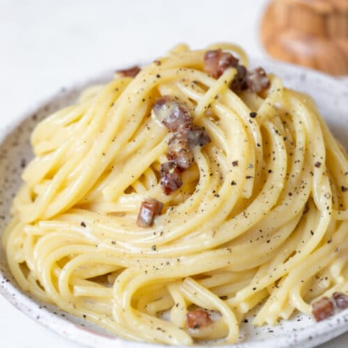

Carbonara

Description
Linguine tossed in a delicate parmesean sauce with crispy bits of pancetta, seasoned with cracked black pepper. Serves 2.
- Pancetta, chopped 8oz
- Linguine Pasta, 1lb
- Parmesenn cheese, grated 4 oz
- 1 egg
- Black pepper to taste
Steps
- Start by boiling a pot of water for the pasta, add salt to the water so that is as salty as the sea. Time pasta to finish with the pancetta below.
- Next, heat a cast iron pan on medium high heat so the surface temperature is between 320-370 degrees.
- Sautee pancetta until crispy, but not burnt, bout 10-15 minutes. Turn heat off but leave pan in its place on the stove.
- Beat the egg and parmesean cheese with black pepper until it forms a semi-thick and grainily-smooth sauce.
- When pasta is done, drain the water and immediately throw the noodles into the cast iron pan with the pancetta bits.
- Quickly add the egg mixture to the pasta and toss it until evenly coated.
- Twirl enough pasta to cover a craving for and serve nest of Carbonara pasta as a side dish or entree.